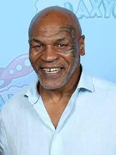
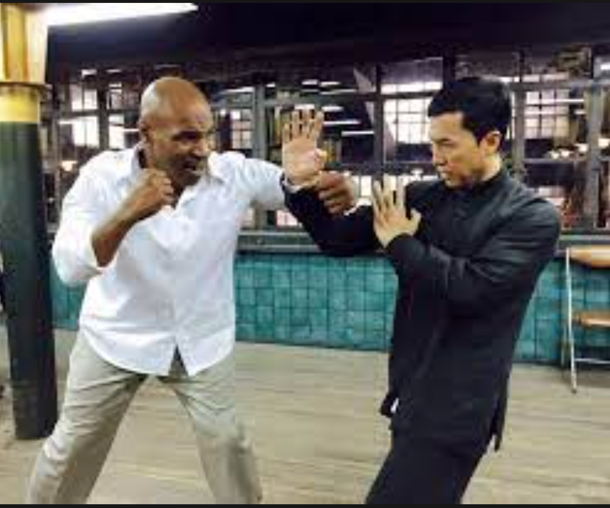
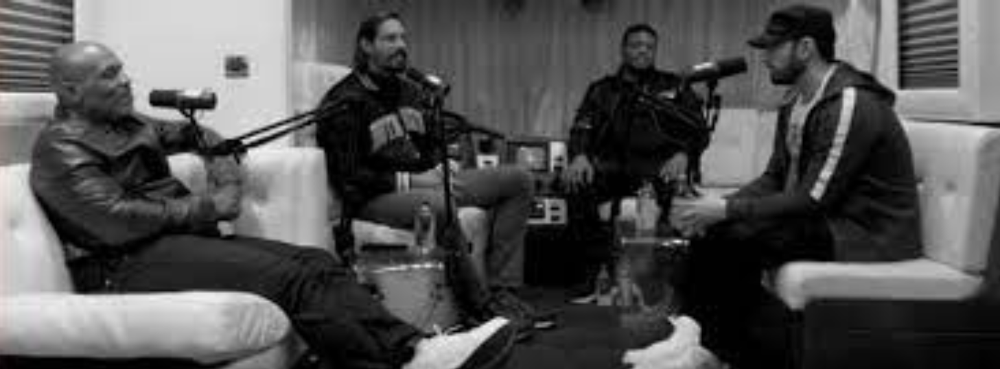

Mike Tyson

Mike Tyson casting in Ip Man 3

Mike Tyson and Eminem in a podcast

Mike Tyson fighting Roy Jones Jr.
Mike Tyson or Nicknamed Iron Mike or Kid dynamite is a famous American heavyweight champion who was born on June 30, 1966.
He started competing in boxing from 1985-2005 then retired after a loss to Kevin Mcbride but came back in 2020 when he started his boxing match against Roy Jones Jr. he was known for his ruthless takedowns and the way he fights. record: 50 wins 44 K.O.'s 6 Loses
Throughout his childhood he was raised in the Brownsville neighbor of brooklyn, he had a difficult child hood facing with bullying and trouble with the law including living in a abusive environment in his home. his father abandoned him and his mother.
he had a step-father then after but his mother soon died and was adopted by Cus D'Amato as mike tyson's guardian and boxing trainer.
through out his teenage years D'amato taught Mike the peekabo boxing style and trained him throughout some time. in 1986 he became the youngest heavy weight champion in history with a knockout of trevor berbick but he was also one of muhammad ali's famous admirers as mike was a fan of him.
in 1989 mike and muhmmad ali met up in a US talk show in where this meet up took place. he fought trevor berbick to avenge muhmmad ali's lost
on Feb 11, 1990 in one of the biggests upsetting moments in boxing history, Kid dymanite lost the championship to James ("Buster") Douglas, who got a technical K.O. on the tenth round. and then on 1991 he was accused of rape and was convicted of charge in 1992
in 1995 upon his release, Mike continued boxing in 1996 regain his champion ship belts. during that one match it had a incident of mike tyson biting off Evan holyfield's ear on June 28, 1997 as a result to losing his boxing license till 1999.
in 2005 he lost the match to Trevor Berbick, and still struggling with his selt-control problem though retired sooner. has been well-known and famous on documentry and now he joined in podcasting in the 2020s
before and after his retirement he also casted in some movies like ip man 3 (2015), the hangover(2009), china salesman(2017), etc. but after his retirement he trained Francis Ngannou and ventured in the podcast buisiness
Mike Tyson casting in Ip Man 3
Mike Tyson and Eminem in a podcast
Mike Tyson fighting Roy Jones Jr.